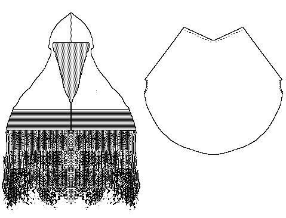

This hood from the Orkneys, may date from the "Viking" age. It resembles Roman Cucullus.
Return to Contents
Some Clothing of the Middle Ages - Hoods - Orkney Hood, by I. Marc Carlson, Copyright 1996 This code is given for the free exchange of information, provided the Author's Name is included in all future revisions, and no money change hands-